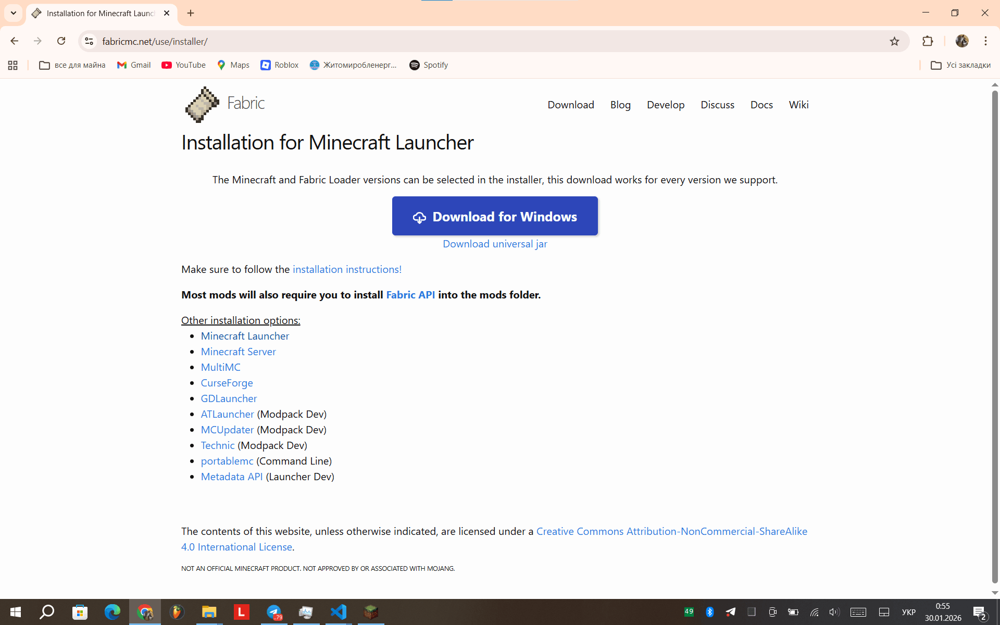
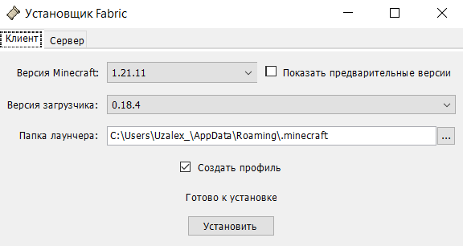

Як встановити Fabric 1.21.11
Багато зараз сучасних лаунчерів для гри в Minecraft підтримують версію Fabric 1.21.11 - (Loader 0.18.2), а для гри на сервері та потреби модів потрібно встановити Fabric Loader 0.18.3 (або новіше) і зараз я покажу як це можна зробити.

Завантаження інсталяції Fabric
Перейдіть на офіційну сторінку завантаження Fabric: https://fabricmc.net/use/. Тут ви знайдете різні версії Fabric для завантаження. Але поки нас цікавить велика синя кнопка "Download for Windows" - натискаємо на неї. (Якщо у вас інша операційна система, скачайте jar файл, кнопка знизу.)
Встановлення Fabric
Після завантаження інсталятора, відкрийте його. Виберіть версію Minecraft (1.21.11) та переконайтеся, що обрана версія Fabric Loader (0.18.3 або новіше). Натисніть "Install" або "Встановити "для початку встановлення.
Завершення інсталяції Fabric
Коли Ви побачите повідомлення про успішне встановлення, це означає, що Fabric був успішно встановлений на ваш Minecraft клієнт.

Перевірка інсталяції Fabric
Відкрийте (або перезапустіть) ваш Minecraft лаунчер. У списку версій виберіть (прибл.)"fabric-loader-0.18.4-1.21.11" і натисніть "Play" або "Грати". Якщо гра запускається без проблем, значить Fabric був встановлений успішно. Після запуску гри, закрийте її для встановлення модів для серверу (див. нижче).

———————————————————————————
Завантаження модів
Увесь проект складається з модів, які ви можете завантажити за посиланнями нижче. Всі моди сумісні з Fabric 1.21.11 (Loader 0.18.3 або новіше).
Також я підготував дві версії мод паків:
1. Проста збірка, (Яка треба тільки для входу на сервер)
2. Оптимізуюча збірка (Спеціально для тих, у кого слабий комп'ютер, або треба більше FPS або потужність)
Завантажити Ви можете їх нижче, натиснувши на якусь з кнопок.
(Завантажиться два файла, бо сервер шось не позволяє завантажувати файли більш 25 мб, і якщо браузер запитає "Дозволити завантажити декілька файлів" то нажміть на "Дозволити" там ж два архіва буде)
Встановлення мод-пака
Після того коли Ви завантажили мод-пак, його ж треба ще встановити, тому відкрийте архіви з модами, та перейдіть до головної папки Minecraft, а потім в папку "mods"За таким рухом "C:\Users\НАЗВА-ПК\AppData\Roaming\.minecraft\mods"
Та закиньте усі моди з архівів в папку "mods" щоб у Вас було як на скріншоті (див. нижче)(В мене оптимізуючий мод-пак)

Кінець встановлення мод-пака і Fabric
Ну ось і все! Все що треба було, вже є в Вашому комп'ютері, залишилось зайти в гру, та зайти на сервер, для комфортної гри.
По іншим питанням, чекаю Вас в Telegram (ну тіпа клік по тексту, або ось ЮЗ - @LastGrossMB)———————————————————————————
Перевірка (ВАЖЛИВО!)
Народ, багато з Вас пише в телеграм каналі зв'язки з тому, що у Вас не працює мод пак, або дуже мало модів, будь-ласка, перевіряйте що у Вас завантажилось два архіва!Так що дуйте до пункта завантаження, і прочитайте ще раз, та перевірте, якщо все ще Ви нічого не зрозуміли, вертайтесь в чат, та і пінгуйте мене.